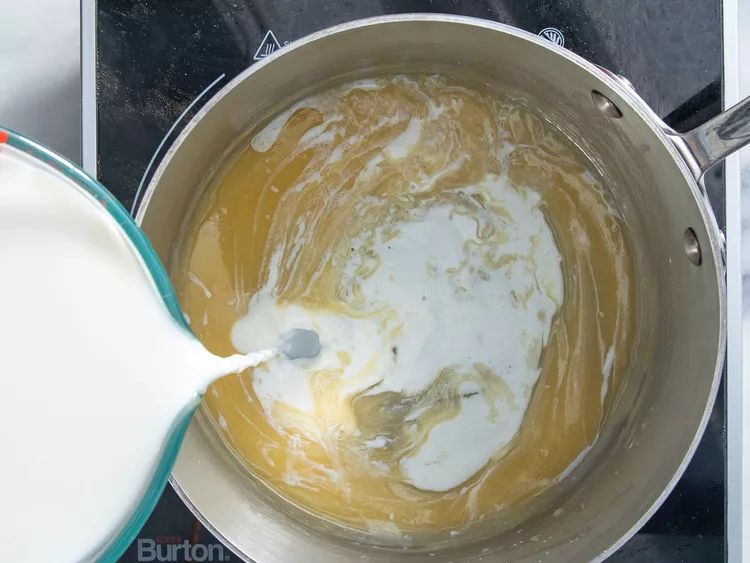

Lasagna Recipe

Why make Lasagna?
Lasagna is a wonderful pasta dish to feed the whole family. It is a
layered pasta dish combined with a rich
tomato meat sauce and creamy bechemel sauce.
Ingredients
The following ingredients will make a lasagna to feed 4 people.
For the tomato sauce:
- 500g ground meat of your choice
- 4 cloves of garlic crushed
- 1 large white onion diced
- 1 tin of chopped tomatoes
- 2 tbsp Worcester Sauce
- 2 tbsp Tomato puree
- 1 tbsp dried basil
- 1 tbsp dried oregano
- 1 bay leaf
- 1 tsp salt
- 1 tsp sugar
For the bechemel sauce:
- 2 tbsp butter
- 2 tbsp plain flour
- 300ml milk
- 200g Cheddar
- 50g Hard italian cheese
- Salt and pepper to taste
For the final lasagna construction:
- Approximately 6 Lasagna sheets
- 30g of cheese to sprinkle on top
Directions
- Gather your ingredients for the tomato sauce.

- Cook the ground meat of choice over medium heat until browned.

- Add in the rest of the tomato sauce ingredients and simmer until your bechemel is ready.

- Start the bechemel sauce. Melt the butter in a pot at a low heat. Stir in the flour to make a paste. Slowly little by litt add the milk. Adding like this stops lumps forming. Have Patience!!!

- Once the sauce is thickened add cheese and salt and peper to taste.
- Now it's time to contruct the lasagna. Layer your red sauce, pasta and then white sauce with white sauce as the final layer on top.

- Back the lasagna for 25mins at 180 degrees (fan oven)